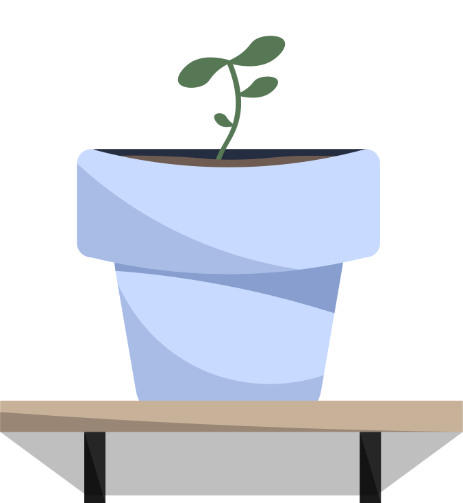

Brugergrænsefladeudvikling
Hvad jeg har lært under temaet
I Tema 04 har jeg lært at udvikle brugergrænseflader. Jeg har fået en forståelse for hvordan HTML, CSS og JavaScript spiller sammen, og hvordan jeg kan bruge dem til at lave funktioner på mit website.
Derudover har jeg arbejdet med Adobe Illustrator, hvor jeg har lært at designe mine egne grafikker og ikoner i SVG-format. Temaet har hjulpet mig med både at arbejde med design og kode, og jeg har fået en bedre fornemmelse for hvordan mine idéer kan blive lavet til et færdigt og fungerende produkt.
Min arbejdsproces
I dette tema skulle jeg udvikle et emergency site med udgangspunkt i et selvvalgt emne.
Jeg startede processen med at lave en papirprototype, som hjalp mig med at visualisere hvilke funktioner og informationer jeg gerne ville have med i min infografik.
Selve infografikken blev udarbejdet i Adobe Illustrator som vektorgrafik, så den kunne bruges direkte på hjemmesiden og skaleres uden at miste kvalitet.
Kodedelen af opgaven var hovedsageligt fokuseret på CSS og JavaScript, hvor jeg arbejdede med styling, layout og interaktive elementer. Gennem opgaven har jeg fået en bedre forståelse for hvordan design og kode spiller sammen.
Jeg fokuserede også meget på at udarbejde både en light og dark version af siden, som ved hjælp af JavaScript og en toggle-knap blev funktionel. I denne opgave blev Custom Properties også introduceret.
Det endelige resultat
Min løsning endte med at mangle noget indhold, da jeg kom en smule bagud med undervisningen. Jeg fokuserede dog så godt som muligt på at lære den basale JavaScript, så Light/Dark mode kunne fungere korrekt.
Find min løsning her: Emergency Site - AI-Uprising